fusion ACHT - Junges Forum Siegburg
Vernissage 06. September 2013 19:00 Uhr
Ausstellungsdauer 06.09 bis 22.09.2013
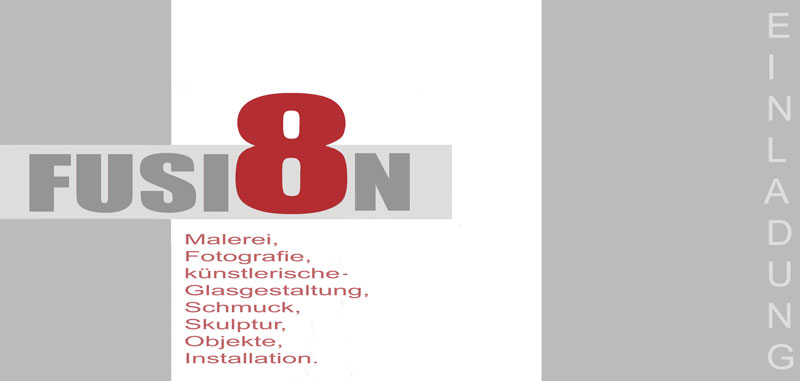

Presse lesen
19. Kunstausstellung NATUR - MENSCH 2013
St. Andreasberg Nationalpark Harz
Vernissage und Verleihung des Andreas-Kunstpreises 21.September 2013 19:00 Uhr
Ausstellungsdauer 22. 09 bis 19.10. 2013
25. KunstTage Rhein-Erft Abtei Brauweiler
Eröffnung am Freitag den 19. Juli 2013 19:30 in der Abteikirche
Ausstellungsdauer 20. Juli bis 21. Juli 2013
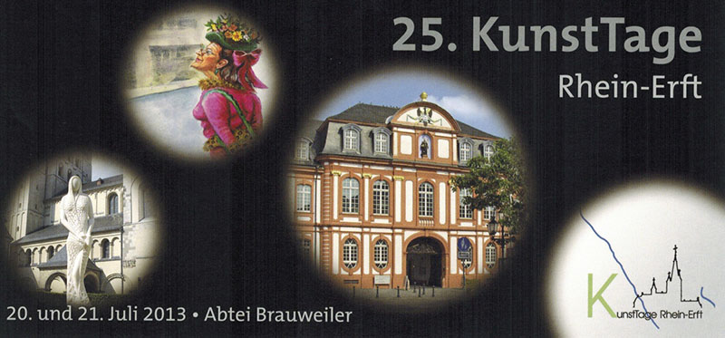

Ich bin mit Arbeiten aus den Fotografie-Serien
-MENSCHEN IM KUNSTRAUM- und LICHT UND SCHATTEN-
an allen Ausstellungstagen im Prälaturgebäude Raum 1.108 zu finden.
Öffnungszeiten:
Samstag: 12:00 bis 19:30 Uhr
Sonntag: 11:00 bis 18:00 Uhr
Eintritt frei
Link zu KunstTagen 2013
21. HUNTENKUNST 2013 Ulft Niederlande
Am 24., 25. und 26. Mai findet die internationale Kunstbörse Huntenkunst in Ulft Niederlande statt.
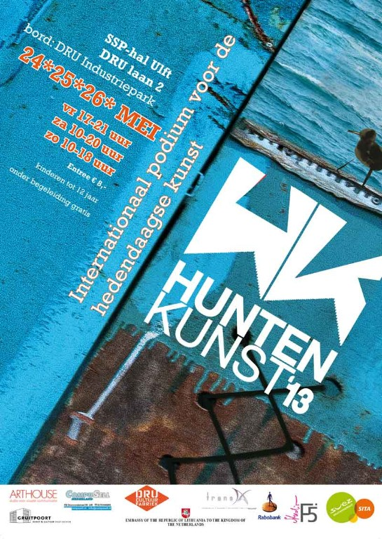
TEXT AUS DEM FLYER
Am 24., 25. und 25. Mai 2013 findet die internationale Kunstmesse Huntenkunst zum 21.Mal statt,
zum zweiten Mal in der SSP-Halle in Ulft. Die Messe ist nach der Ortschaft Veldhunten benannt. Dort
hatte man sich ursprünglich vorgenommen, eine solche Kunstmesse zu veranstalten. Veldhunten
ist eine überwiegend landwirtschaftliche geprägte Ortschaft etwa zwei Kilometer von Ulft entfernt
(unweit der deutschen Grenze). Die ‘Galerie bij de Boeken’, eine Ulfter Institution die als Organisator
von Ausstellungen bekannt ist, erarbeitete das Konzept.
1993 wurde die Stiftung Huntenkunst gegründet. Gemäß ihrer Satzung veranstaltet Huntenkunst
Ausstellungen internationaler, zeitgenössischer Kunst, fördert die Kontakte zwischen Künstlern und
Publikum und arbeitet mit Museen und Galerien zusammen. Ziel ist es, die Kunstszene in der sgn.
Achterhoek zu beleben und zu bereichern. Das besondere an Huntenkunst ist, dass die Künstlerinnen
und Künstler selbst anwesend sind. So entwickelt sich ein ganz besonderer Gedankenaustausch
zwischen ihnen und dem Publikum. Von der Messe - eigentlich eine Mischung von Ausstellung und
Verkaufsschau - geht eine höchst anregende Wirkung aus, die in den unterschiedlichen Ausdrucksformen
und Lebensanschauungen der beteiligten Künstlerinnen und Künstler begründet ist.
Die Auswahl der Teilnehmer geschieht auf Grund mehrerer Kriterien: vorrangig ist es die Qualität
der Kunstwerke, aber die Jury achtet ebenso auf die Vielfalt und Variationsbreite des Angebots,
denn die Messe soll die Pluralität im Bereich der bildenden Kunst widerspiegeln. Inzwischen hat die
Messe alljährlich mehr als 200 Teilnehmer aus den unterschiedlichsten Ländern. 2013 werden Gäste
aus Litauen ihre Arbeiten im Rahmen einer Sonderausstellung auf der Messe präsentieren.
Huntenkunst ist zu einer wichtigen Messe geworden, die Begegnung mit der Kunst und Künstlerinnen
und Künstlern auf eine ganz besondere Weise ermöglicht. In diesem Sinn wollen wir auch im
Jahr 2014 fortfahren.
Link zur Huntenkunst
32th MINI PRINT INTERNATIONAL-Gallery L'Etangd'Art France
Ausstellung vom 12.November 2012 bis 16. Januar 2013
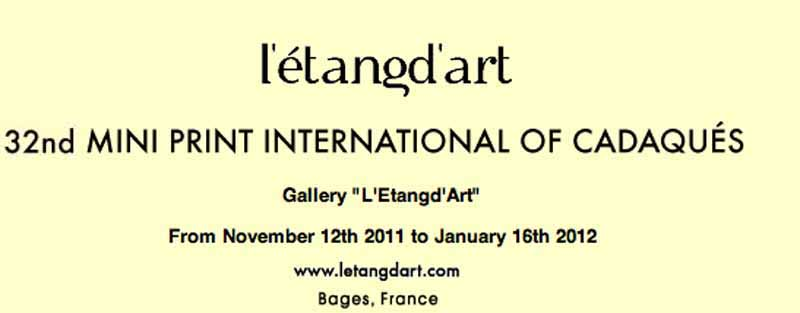
32th MINI PRINT INTERNATIONAL
Ausstellung vom 07.Oktober 2012 bis 06. November 2012
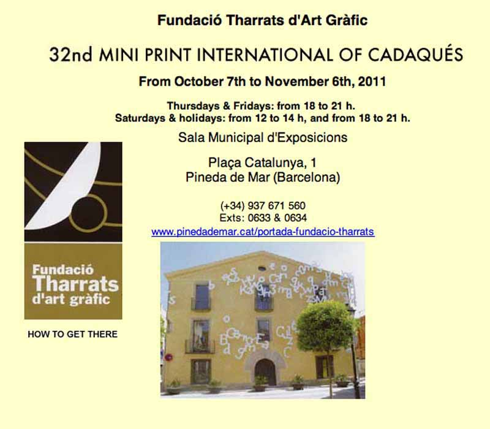
32th MINI PRINT INTERNATIONAL-Galerie L Ètangd`Art Cadaques Spain
Ausstellung vom 30.Juni 2012 bis 30. September 2012
32th MINI PRINT INTERNATIONAL-Galerie Wingfield Barns UK
Ausstellung vom 20.Juli 2012 bis 09. September 2012
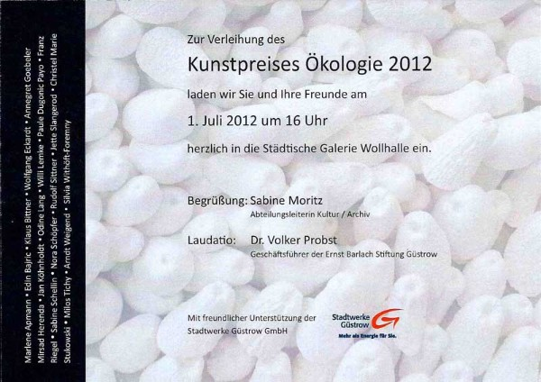
Am 01. Juli 2012 wurde mir im Rahmen der Finissage
der Ausstellung KUNST UND UMWELT der
KUNSTPREIS ÖKOLOGIE BARLACHSTADT GÜSTROW verliehen.
Auszug aus der Loudatio von Dr. Volker Probst, Kunsthistoriker
Leiter der Ernst Barlach Museen Güstrow
Ausstellung „Kunst und Umwelt“ 2012
Städtische Galerie Wollhalle, Güstrow
Thema: „Strömungen“
Rede der Jury zur Preisverleihung
Güstrow, Sonntag, 01. Juli 2012, 16.00 Uhr
TV Bericht ansehen
Laudatio lesen
Presse Nordkurier
Bilder Preisverleihung ansehen
16. Auststellung KUNST UND UMWELT
13. KUNSTPREIS ÖKOLOGIE
Galerie Wollhalle Güstrow
Ausstellung vom 06.Mai 2012 bis 01. Juli 2012
Vernissage 05.Mai.2012 15:00 Uhr
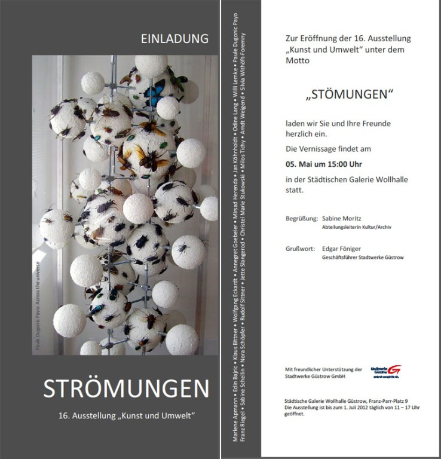
Link Güstrow
Ich bin mit 3 Arbeiten aus der Serie PIONT OF NO RETURN? in der Ausstellung vertreten. Mit der Ausstellungsteilnahme ist gleichzeitig die Nominierung für den 13. Kunstpreis Ökologie verbunden.
Die Ausstellungsteilnahme wurde durch die Jury in einem anonymen Verfahren, anhand der eingereichten Arbeiten, festgelegt.
HUNTENKUNST 2012 - Das zwanzigste Jahr
Am 11., 12. und 13. Mai findet zum zwanzigten Mal die internationale Kunstbörse Huntenkunst in Ulft Niederlande statt.
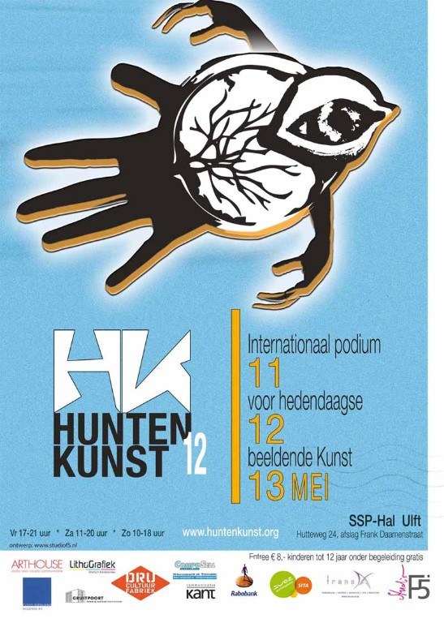
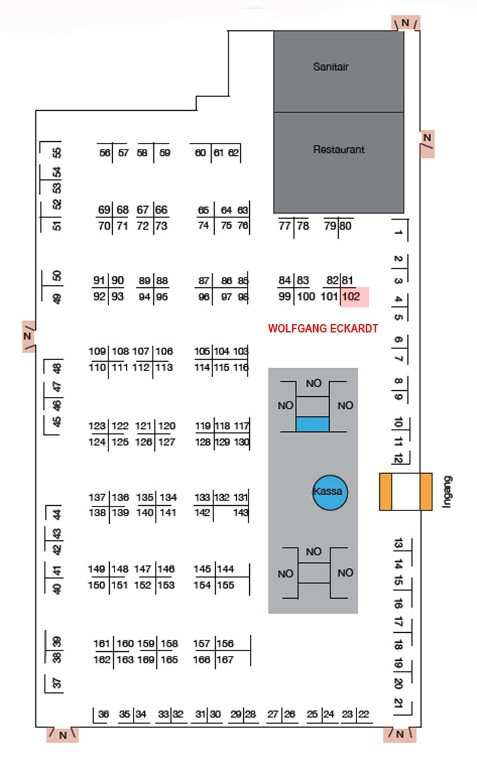
TEXT AUS DEM FLEYER
Am 11., 12. und 13. Mai 2012 findet zum zwanzigsten Mal die internationale Kunstmesse Huntenkunststatt, jetzt in der SSP-Halle in Ulft. Die Messe ist nach der Ortschaft Veldhunten benannt. Dort hatte mansich ursprünglich vorgenommen, eine solche Kunstmesse zu veranstalten. Veldhunten ist eine überwiegend landwirtschaftliche geprägte Ortschaft etwa 2 Kilometer von Ulft entfernt (unweit der deutschen Grenze). Die ‘Galerie bij de Boeken’, eine Ulfter Institution die als Organisator von Ausstellungen bekanntist, erarbeitete das Konzept.
1993 wurde Huntenkunst unter dem Namen: “Stichting Huntenkunst/ Podium für internationale zeitgenössische bildende Kunst” gegründet. Gemäß ihrer Satzung veranstaltet die Stiftung Huntenkunst Ausstellungen internationaler, zeitgenössischer Kunst, fördert die Kontakte zwischen Künstlern und Publikum und arbeitet mit Museen und Galerien zusammen. Ziel ist es, die Kunst- szene in der sgn. Achterhoek zubeleben und zu bereichern. Das Besondere an Huntenkunst ist, dass die Künstlerinnen und Künstler selbst anwesend sind. So entwickelt sich ein ganz besonderer Gedankenaustausch zwischen ihnen unddem Publikum. Von der Messe - eigentlich eine Mischung von Ausstellung und Verkaufsschau - geht eine höchst anregende Wirkung aus, die in den unterschiedlichen Ausdrucksformen und Lebensanschauungen der beteiligten Künstlerinnen und Künstler begründet ist. Die Auswahl der Teilnehmer geschieht auf Grund mehrerer Kriterien: vorrangig ist es die Qualität der Kunstwerke, aber die Jury achtet ebenso auf die Vielfalt und Variationsbreite des Angebots, denn die
Messe soll die Pluralität im Bereich der bildenden Kunst widerspiegeln. Inzwischen hat die Messe alljährlich rund 200 Teilnehmer aus den unterschiedlichsten Ländern. 2012 werden Gäste aus Norwegen ihreArbeiten im Rahmen einer Sonderausstellung auf der Messe präsentieren. Huntenkunst ist zu einer wichtigen Messe geworden, die Begegnung mit der Kunst und Künstlerinnen
und Künstlern auf eine ganz besondere Weise ermöglicht. In diesem Sinn wollen wir auch im Jahr 2013
fortfahren. Dann wird am 24., 25. und 26. Mai Huntenkunst 2013 stattfinden.
Die SSP-Halle hat mehr als 5000m2. Sie steht neben der DRU Kulturfabrik, ein kultureltes Zentrum (von Theater bis Galerie) im Zentrum von Ulft. Die Halle bedindet sich in einem Park mit weiteren sieben faszinierenden Hallen, die alle unter Denkmalschutz stehen.
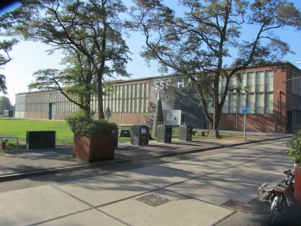
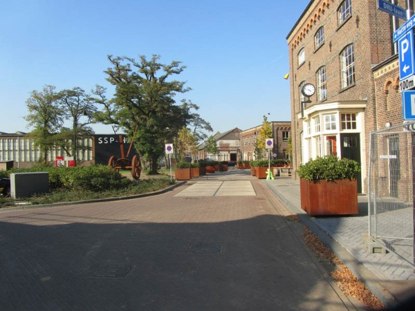
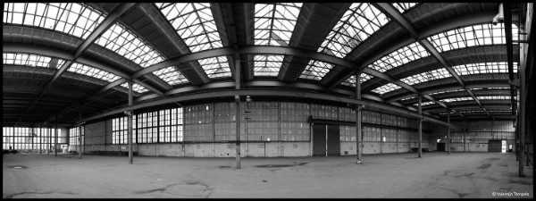
Link zur Huntenkunst
KÜNSTLER ENTDECKEN EUROPA
Galerie im Forum Leverkusen
08. 01- 22. 01 2012
Eröffnung und Preisverleihung 08. Januar 2012 16:00 Uhr
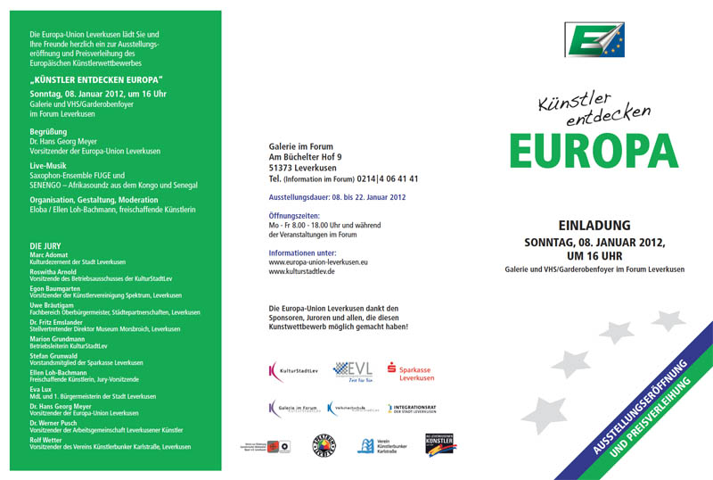
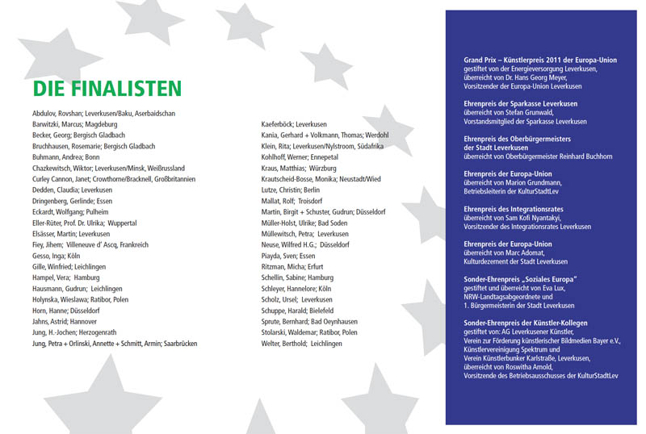
Ich bin mit der Arbeit -Europa, was nun?- in der Ausstellung vertreten.
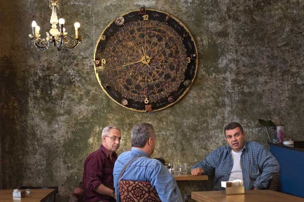
Link zur Europa Union
Auszug aus der Homepage der Europa-Union Leverkusen:
KÜNSTLER ENTDECKEN EUROPA / ARTISTS DISCOVER EUROPE
DES ARTISTES DÉCOUVRENT L’EUROPE / ARTISTAS DE LAS ARTES PLÁSTICAS DESCUBREN EUROPA
5. Europäischer Künstlerwettbewerb 2011 / 5th European Artists’ Competition 2011 / 5 ème concours artistique européen 2011 / 5. competencia artística europea 2011
Die Europa-Union Leverkusen bedankt sich bei allen Künstlerinnen und Künstlern für die Teilnahme am 5. Europäischen Künstlerwettbewerb 2011 „Künstler entdecken Europa“
mit der Ernennung zur/zum
Europa-Künstlerin 2011 / Europa-Künstler 2011.
Die Ausschreibung hat großen Zuspruch gefunden. 126 Bewerbungen von Künstlerinnen und Künstlern aus Bosnien, Deutschland, Frankreich, Großbritannien, Litauen, Moldawien, Niederlande, Österreich, Polen, Tschechien, aus der Türkei, aus Ungarn, Weißrussland und aus außereuropäischen Ländern wie Aserbaidschan, China, Süd-Korea, Südafrika, Mexiko und Argentinien sind eingegangen!
Unter den Bewerbungen fanden sich die verschiedensten Techniken der Malerei, Grafiken, Collagen, Skulpturen, Installationen, Mixed Media, Künstlerbücher, Objekte, Fotografie, Filme, Videos, Multimediale Projekte bis hin zur Performance und zu Aktionen - Variationen der gesamten, vielfältigen Palette der bildenden Kunst. Die zwölfköpfige Jury, symbolisch für die 12 Sterne in der Europa-Flagge, hatte einen harten Job!!!
Die Präsentation der eingereichten Wettbewerbsarbeiten fand in verschiedenen Phasen statt: In der Aufbereitung aller eingegangenen Arbeiten, in der individuellen Betreuung (Sichtung, Nachfrage, Bestätigung), in 2 Beamer – Durchläufen, in der mündlichen Kurzpräsentation eines jeden Werkes und in der individuellen Mappen-Einsicht durch jeden der Juroren. Die wohl ausgewogene Besetzung der Jury hat durch ihre (verdeckte) Bewertung die qualitativ und kreativ hohe Leistung aller Bewerberinnen und Bewerber gewürdigt! Alle 126 Bewerbungen wurden anerkennend bewertet. Ein wunderbares Ergebnis!
Die für die Ausstellung und die Preise Nominierten werden zu einem späteren Zeitpunkt bekannt gegeben.
Die Europa-Union sagt Danke für diesen europäischen Einsatz und wünscht allen Europa-Künstlerinnen und –Künstlern viel Glück und eine kreative Zukunft!
Ellen Loh-Bachmann (Eloba)
INTERNATIONALES FESTIVAL FÜR REISE- UND REPORTAGE- FOTOGRAFIE
11. SCHÖMBERGER FOTOHERBST
VOM 07. OKTOBER BIS 23.OKTOBER 2011
In der Kategorie I (Profis) werden 10 Arbeiten aus meiner Fotostrecke
ZWISCHEN 2 UND 4 - Köln
zu sehen sein.
Vernissage: Freitag, den 07. Oktober 2011
Finissage und Preisverleihung: Samstag, den 22. Oktober 2011
Informationen zu der Ausstellung unter dem Link: Schömberger Fotoherbst
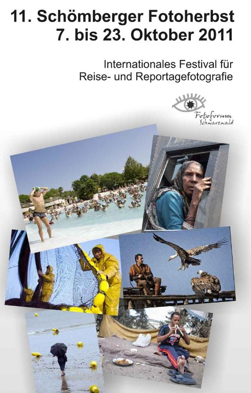
KunstTage Rhein-Erft Abtei Brauweiler
Eröffnung am 29. Juli 2011 19:30
Ich bin mit Arbeiten aus der Serie - ZWISCHEN 2 UND 4 Köln- an
allen Ausstellungstagen im Gierdensaal zu finden.
Öffnungszeiten:
Samstag: 12:00 bis 21:00 Uhr
Sonntag: 11:00 bis 18:00 Uhr
Eintritt frei
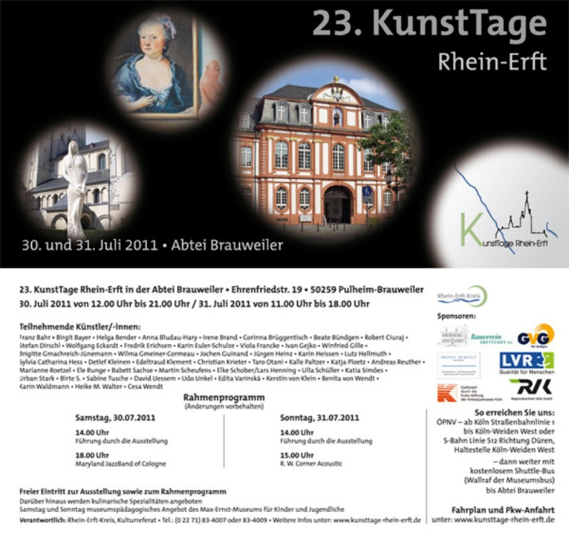
MENSCHENBILDER- Fotografie und Malerei-
Kreishaus Galerie Bergheim
Eröffnung am 05. Dezember 2010 11:00
Ausstellung vom 05.Dezember 2010 bis 28. Januar 2011
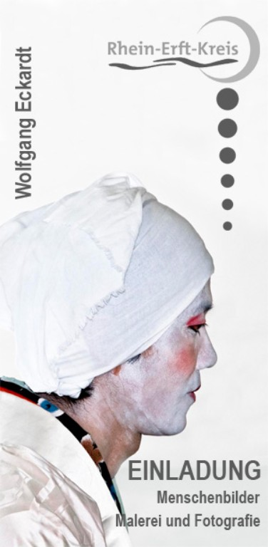
30th MINI PRINT INTERNATIONAL-Gallery L'Etangd'Art France
Ausstellung vom 27.November 2010 bis 16. Januar 2011
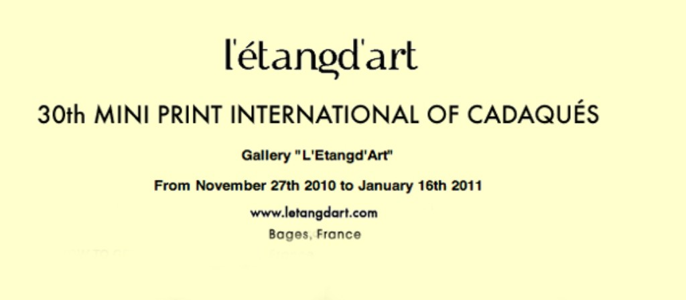
30th MINI PRINT INTERNATIONAL-Fundaci—Tharrats d'Art Grafic Barcelona Spain
Ausstellung vom 08.Oktober 2010 bis 07. November 2010
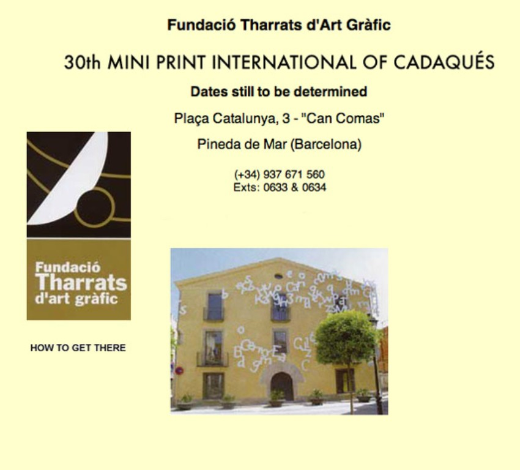
30th MINI PRINT INTERNATIONAL-Galerie L Ètangd`Art Cadaques Spain
Ausstellung vom 26.Juni 2010 bis 30. September 2010
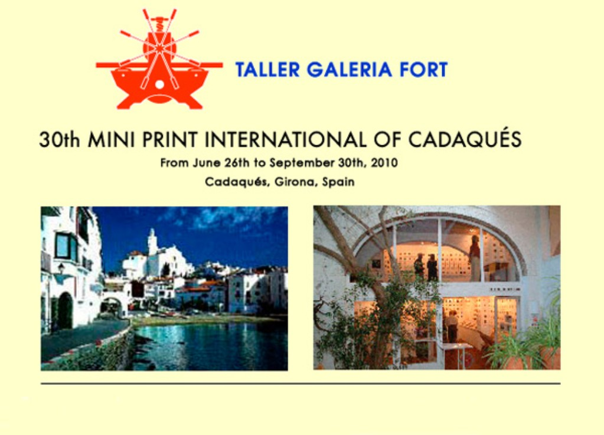
30th MINI PRINT INTERNATIONAL-GalerieWingfeld Barns UK
Ausstellung vom 27.Juli 2010 bis 19. August 2010
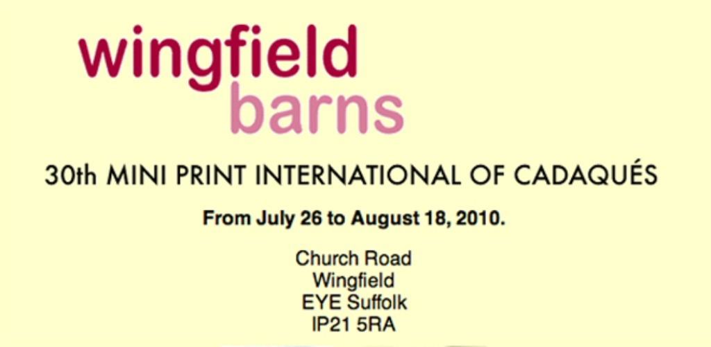
KUNSTGESTALT MENSCH-15.Ausstellung Kunst & Umwelt-
Galerie Wollhalle Güstrow
Ausstellung vom 18.Mai 2010 bis 11. Juli 2010
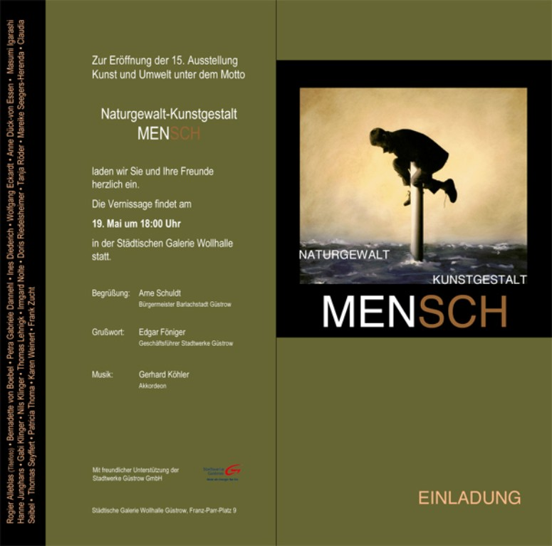
Die Ausstellungsteilnahme wurde durch die Jury im anonymen Verfahren, nur anhand der eingereichten Arbeiten, festgelegt.
MEET 2010 Artprojekt Hannover
Ausstellung vom 05.Juni 2010 bis 10. Juli 2010
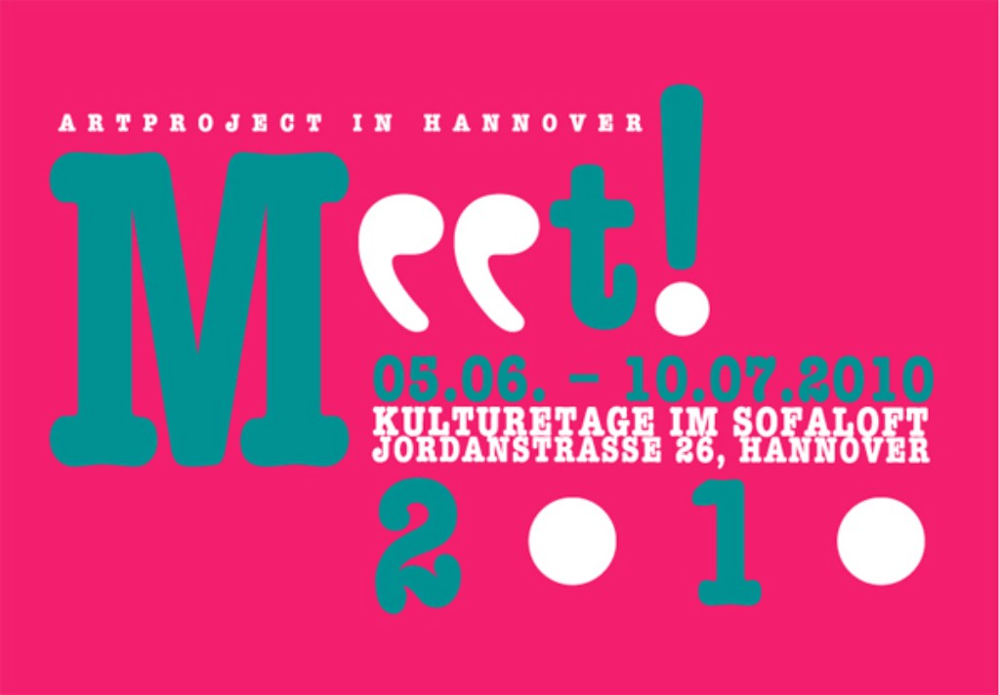
KUNST- UND DESIGNPREIS Kunstwerk Lippe- Burg Horn
Ausstellung vom 26.Juni 2010 bis 04. Juli 2010
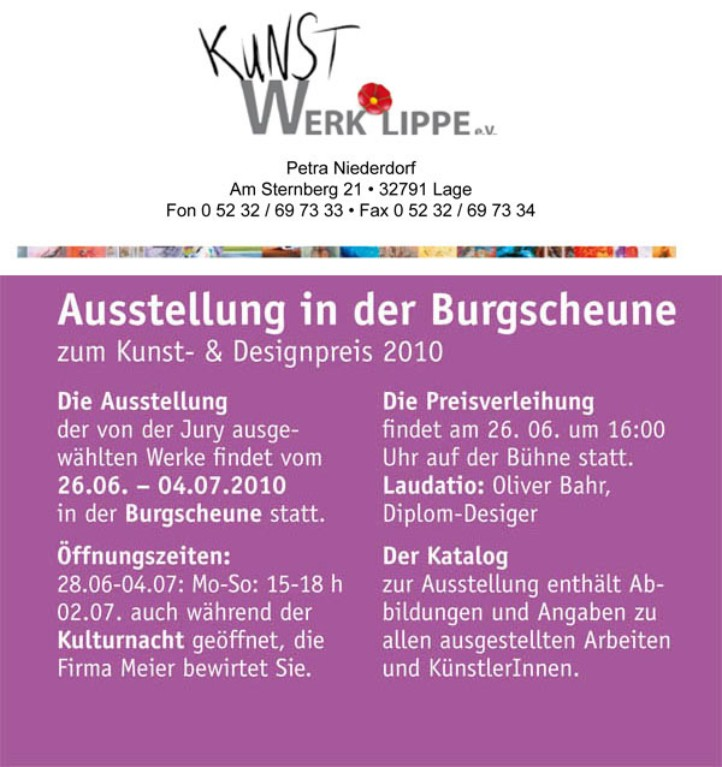
SEH-TEST- Löhrerhof Hürth
Ausstellung vom 02.Juli 2010 bis 11. Juli 2010
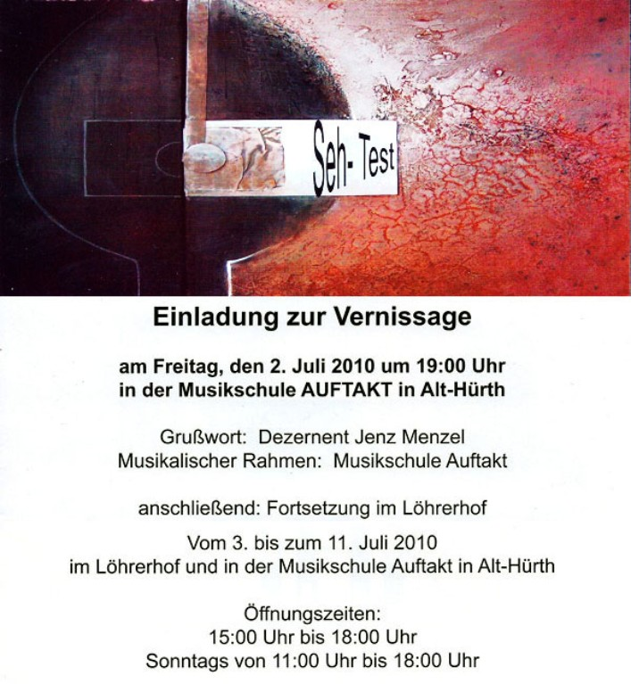
KUNSTPREIS Alzey-Worms Schloss Alsheim
Ausstellung vom 09.Mai 2010 bis 16. Mai 2010
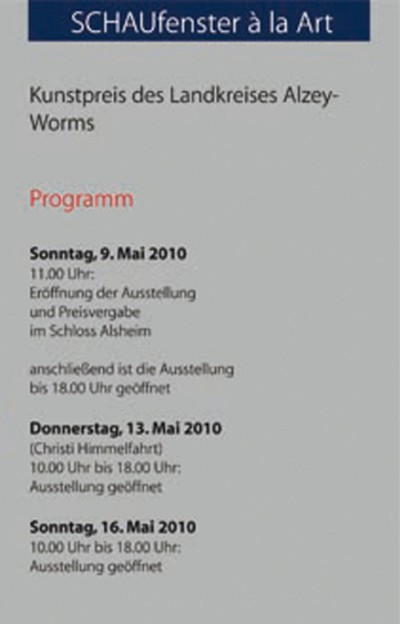
ENERGIE-QQArt Galerie Hilden
Ausstellung vom 29.Januar 2010 bis 14. Februar 2010
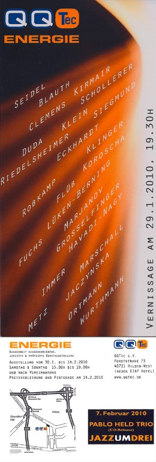